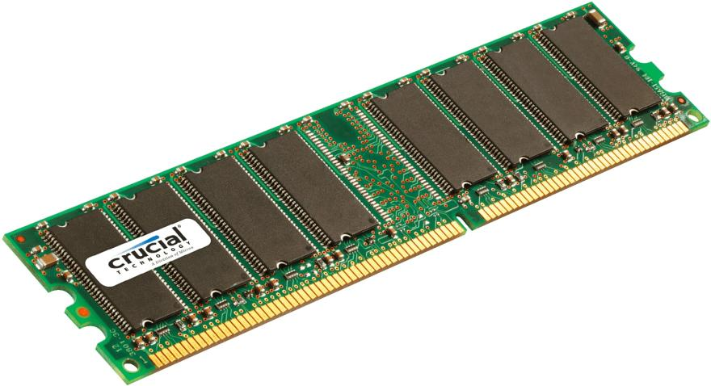

Pamięć DDR SDRAM
Produkcję pamięci DDR SDRAM rozpoczęto w 1999 roku. Jest ona modyfikacją dotychczas stosowanej pamięci SDRAM (ang. synchronous dynamic RAM). W pamięci typu DDR SDRAM dane przesyłane są w czasie trwania zarówno rosnącego, jak i opadającego zbocza zegara, przez co uzyskana została dwa razy większa przepustowość niż w przypadku konwencjonalnej SDRAM typu PC-100 i PC-133. Kości zasilane są napięciem 2,5 V, a nie 3,3 V, co wraz ze zmniejszeniem pojemności wewnątrz układów pamięci, powoduje znaczące ograniczenie poboru mocy.
